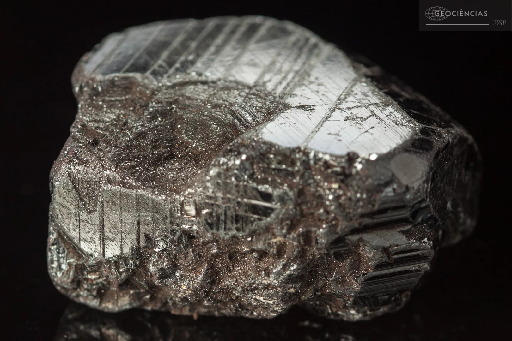
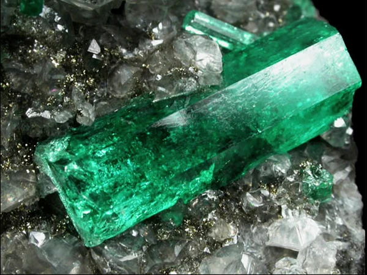
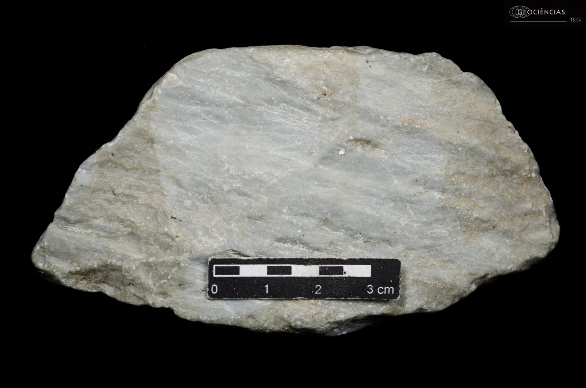

SESI-MG · Lei Federal de Incentivo à Cultura
Minas
das Minas
Uma exposição itinerante que leva a história da mineração e o patrimônio mineral de Minas Gerais até você.
Um universo de descobertas
rodando pelas estradas de MG
O Minas das Minas acontece em uma carreta especialmente adaptada, transformada em um ambiente expositivo itinerante que percorre cidades mineiras levando cultura, educação e experiências sensoriais únicas.
Por meio de recursos audiovisuais, conteúdos educativos e instalações interativas, a exposição mergulha o visitante na história da mineração, nos minérios que moldaram Minas Gerais e nos desafios contemporâneos da sustentabilidade mineral.
Voltada para crianças e adolescentes de 7 a 14 anos — especialmente estudantes de escolas públicas —, a experiência é projetada para ser lúdica, acessível e transformadora.
-
Recursos Audiovisuais
Vídeos, animações e projeções que contam a história da mineração em MG
-
Experiências Sensoriais
Toque, observe e interaja com amostras reais de rochas e minerais
-
Sustentabilidade
Reflexões sobre mineração responsável, território e desenvolvimento sustentável
-
Identidade Mineira
A relação histórica, econômica e cultural de MG com suas minas e minérios

.jpeg)
.jpeg)
Onde a carreta
está passando
Confira as cidades que receberão a exposição em 2026. A entrada é gratuita e aberta ao público em geral.
Paracatu
5 a 29 de outubro de 2026
Largo do Rosário — Av. Olegário Maciel, 127 · Centro
Horário: consulte a programação local
Nazareno
Outubro de 2026 — datas a confirmar
Local a ser divulgado
São João del-Rei
Novembro de 2026 — datas a confirmar
Local a ser divulgado
Novas cidades poderão ser incluídas na programação. Acompanhe as atualizações.
Os tesouros do subsolo
de Minas Gerais
Minas Gerais é um dos estados mais ricos em diversidade mineral do mundo. Conheça alguns dos principais minérios que fazem parte dessa história.

MetalMinério de Ferro
MG detém as maiores reservas de minério de ferro do Brasil. Quadrilátero Ferrífero, na região central do estado, é um dos maiores depósitos do planeta.

GemaEsmeralda
Uma das gemas mais valiosas do mundo. Minas Gerais é responsável por parte significativa da produção mundial, especialmente na região de Nova Era e Itabira.
 Gema
Gema
Topázio Imperial
O famoso Topázio Imperial de Ouro Preto é único no mundo pela sua coloração laranja-avermelhada. Encontrado exclusivamente na Serra de Antônio Pereira.
Ouro
O ciclo do ouro no século XVIII transformou Minas Gerais e o Brasil. Cidades como Ouro Preto, Mariana e Sabará guardam a memória viva dessa riqueza.
Nióbio
O Brasil detém cerca de 98% das reservas mundiais de nióbio, mineral essencial para a fabricação de aços especiais. Araxá, em MG, é o principal polo mundial.

IndústriaCalcário
Fundamental para a construção civil e a agricultura. Minas Gerais é um dos maiores produtores nacionais, com jazidas distribuídas por todo o estado.
Mineração com
responsabilidade
A exposição promove reflexões sobre como a mineração pode coexistir com a preservação ambiental e o desenvolvimento social. Entender o passado nos ajuda a construir um futuro mais equilibrado para as comunidades e o meio ambiente.
- Recuperação de áreas degradadas pela mineração
- Uso eficiente dos recursos hídricos
- Geração de emprego e renda nas comunidades locais
- Tecnologias de extração com menor impacto ambiental
- Educação ambiental e consciência territorial
.jpeg)
Leve a exposição
para sua escola
Professores e gestores escolares podem agendar visitas, solicitar material de apoio pedagógico ou entrar em contato com a equipe do projeto.
Grupos escolares têm prioridade de agendamento. Entre em contato com a equipe local de cada cidade.
Disponibilizamos material complementar para professores prepararem os alunos antes da visita.
Para informações gerais sobre o projeto, entre em contato pelo site oficial do SESI-MG.
www.sesi-mg.org.br ↗Acompanhe as novidades e a agenda atualizada nas redes sociais do SESI-MG.